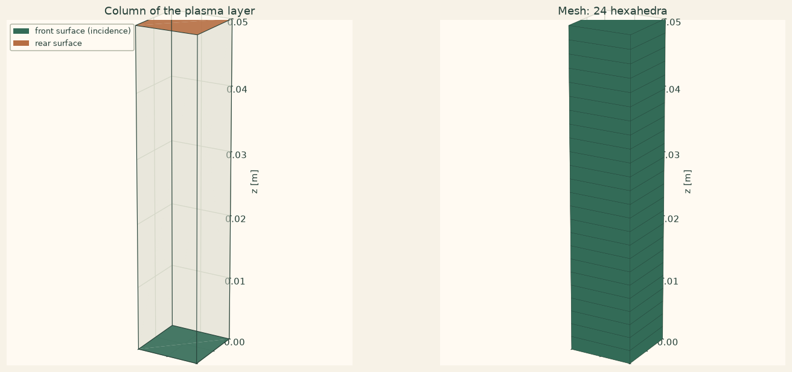

Docs › Examples › Circularly polarized waves in a magnetized plasma layer
Electromagnetic waves · 3D
Circularly polarized waves in a magnetized plasma layer
A circularly polarized GHz wave falls on a lossy plasma layer magnetized along its normal; the right-hand wave is absorbed at the electron cyclotron resonance, the left-hand wave passes.

What it computes
OneSimulation solves the 3D frequency-domain Maxwell equations with second-order Nedelec elements in a periodic column of the layer read from STEP; MagnetizedColdPlasma.uniform gives the anisotropic conductivity from density, magnetic field and collision frequency, and impedance boundaries represent the air half-spaces with the incident wave. 51 frequencies from 1 to 6 GHz are swept for both senses of rotation. The script that builds the STEP file comes with the notebook.
What it checks
The refractive index read from the computed field matches the Appleton-Hartree R and L indices within 0.01 %, reflectance and transmittance agree with the exact layer formulas within 4e-6 over the whole sweep, the absorbed power from the plasma dissipation closes the power balance to 2e-14, the opposite sense of rotation stays below 1e-12 V/m, and the transmitted field at the resonance converges at fourth order to 0.008 % on 24 cells.
Geometry
The notebook starts at the import of the CAD file magnetized_plasma_slab_waves.step: STEP (AP242), readable by any CAD program, with the names of the faces that the boundary conditions use. Put it next to the notebook.

The geometry script
The script magnetized_plasma_slab_waves_geometry.py builds the geometry with the CAD objects of OneSimulation and writes the file. Change a dimension there, run it, and run the notebook again.
"""Geometry of the OneSimulation example "Circularly polarized waves in a lossy magnetized plasma slab".
Builds a 50 mm thick plasma layer as a 10 mm x 10 mm column of the unbounded slab with the CAD
objects of OneSimulation and writes magnetized_plasma_slab_waves.step. The faces keep their names
x_min, x_max, y_min, y_max (periodic sides) and z_min, z_max (the two surfaces of the layer).
"""
from onesim.cad.d3 import Box
layer = Box(length=0.010, width=0.010, height=0.050)
layer.save("magnetized_plasma_slab_waves.step")The notebook
The complete notebook, cell by cell. Run it to produce the figures and the comparison printout.
A static magnetic field \(\mathbf B_0=B_0\hat{\mathbf z}\) makes a plasma anisotropic: the electrons gyrate around the field lines at the cyclotron frequency \(\omega_c=eB_0/m_e\), and a wave travelling along \(\mathbf B_0\) splits into two circularly polarized waves with different refractive indices. The right-hand (R) wave turns with the electrons and is absorbed strongly at the electron cyclotron resonance \(\omega=\omega_c\), the principle of ECR plasma sources; the left-hand (L) wave turns the other way and does not resonate. Collisions with frequency \(\nu\) make the plasma lossy.
Here a plane wave from air falls at normal incidence on a plasma layer of thickness \(d=50\) mm with electron density \(n_e=5\times10^{16}\) m\(^{-3}\) (plasma frequency \(f_p=2.01\) GHz), \(B_0=87.5\) mT (cyclotron frequency \(f_c=2.45\) GHz) and \(\nu=10^9\) s\(^{-1}\). The ions are immobile. OneSimulation describes the plasma by MagnetizedColdPlasma, whose conductivity tensor follows from the cold electron equation of motion with the Lorentz force and the collision drag, and solves \(\nabla\times\nabla\times\mathbf E-k_0^2\,\boldsymbol\varepsilon_r\cdot\mathbf E=0\) with Nédélec elements of order 2.
The 3D model is a 10 mm \(\times\) 10 mm column of the layer, periodic in \(x\) and \(y\) so that it represents the unbounded layer and an unbounded plane wave. It comes from the CAD file magnetized_plasma_slab_waves.step, written by magnetized_plasma_slab_waves_geometry.py:
| boundary | condition | |---|---| | \(x\) and \(y\) sides | periodic pairs | | \(z=0\) (front surface) | impedance of the air half-space, \(Y_0=\sqrt{\varepsilon_0/\mu_0}\), with the incident field \(\mathbf E_0=(\hat{\mathbf x}\pm\mathrm i\hat{\mathbf y})/\sqrt2\) | | \(z=d\) (rear surface) | impedance of the air half-space behind the layer |
The impedance condition \(\mathbf n\times\mathbf H=Y_0\,\mathbf n\times\big(\mathbf n\times(\mathbf E-2\mathbf E_0)\big)\) is exact for a plane wave at normal incidence, so the air need not be meshed. With the time factor \(e^{-\mathrm i\omega t}\), \(\mathbf E_0=(\hat{\mathbf x}+\mathrm i\hat{\mathbf y})/\sqrt2\) turns from \(x\) to \(y\), with the electrons: it excites the R wave; the other sign excites the L wave.
Reference (T. H. Stix, Waves in Plasmas, AIP 1992, §1-4 and §2-2; F. F. Chen, Introduction to Plasma Physics and Controlled Fusion, 3rd ed., Springer 2016, §4.18; K. G. Budden, The Propagation of Radio Waves, Cambridge 1985, ch. 3). For propagation along \(\mathbf B_0\) the Appleton-Hartree equation with collisions gives
with the wavenumber \(k=n\,\omega/c\) and the field attenuation \(\operatorname{Im}k\). The R wave is cut off between \(f_c=2.45\) GHz and \(f_R=3.57\) GHz, the L wave below \(f_L=1.12\) GHz. A layer of index \(n\) in air reflects and transmits (M. Born and E. Wolf, Principles of Optics, 7th ed., §1.6.4)
and absorbs \(A=1-|r|^2-|t|^2\) of the incident power.
import numpy as np
from scipy.constants import c, e, epsilon_0, m_e, mu_0
from onesim.cad.exchange import load
from onesim.meshing import PeriodicPair, StructuredHexahedralMesher
from onesim.numerics import Numerics
from onesim.numerics.fem import FiniteElement, Nedelec
from onesim.numerics.linear import ComplexSparseDirect
from onesim.physics.electromagnetics import FrequencyDomainMaxwell, ImpedanceBoundary
from onesim.physics.plasma import MagnetizedColdPlasma
from onesim.simulation import PeriodicBoundary, Problem, Simulation
from onesim.visualization import theme, plots
theme.set()Geometry and mesh
Hexahedra, one across the periodic column and 24 through the layer; two coarser meshes serve the mesh study.
layer = load("magnetized_plasma_slab_waves.step")
faces = layer.boundaries
width, depth, thickness = layer.size
meshes = {cells: StructuredHexahedralMesher(cells=(1, 1, cells)).generate(layer) for cells in (6, 12, 24)}
mesh = meshes[24]
fig = plots.figure(1, 2, size=(13, 5.5))
plots.geometry(layer, selection={"front surface (incidence)": faces.z_min, "rear surface": faces.z_max}, labels=False,
camera=plots.Camera(elevation=20, azimuth=-60), title="Column of the plasma layer", ax=fig[0])
plots.mesh(mesh, groups=("all",), legend=False, camera=plots.Camera(elevation=20, azimuth=-60),
title=f"Mesh: {mesh.cell_count} hexahedra", ax=fig[1])
plots.show()Model
The plasma is given by its three constant inputs. One solve per frequency and sense of rotation; waves maps the sense to the incident field.
electron_density, magnetic_field, collision_frequency = 5e16, 0.0875, 1e9
plasma = MagnetizedColdPlasma.uniform(electron_density=electron_density, magnetic_field=(0.0, 0.0, magnetic_field),
collision_frequency=collision_frequency)
admittance = np.sqrt(epsilon_0 / mu_0)
numerics = Numerics(spatial=FiniteElement(element=Nedelec(order=2)), linear_solver=ComplexSparseDirect())
waves = {"R": np.array([1, 1j, 0]) / np.sqrt(2), "L": np.array([1, -1j, 0]) / np.sqrt(2)}
maxwell = lambda frequency: FrequencyDomainMaxwell(domain=layer.volume, frequency=frequency, material=plasma,
phasor_convention="exp(-i*omega*t)", amplitude_convention="peak")
solve = lambda model, wave, mesh: Simulation(problem=Problem(name="Wave on a magnetized plasma layer", geometry=layer, physics=(model,),
boundary_conditions=(*(PeriodicBoundary(physics=model, pair=PeriodicPair(faces[side + "_min"], faces[side + "_max"])) for side in "xy"),
ImpedanceBoundary(physics=model, boundary=faces.z_min, admittance=admittance, incident_electric_field=tuple(waves[wave])),
ImpedanceBoundary(physics=model, boundary=faces.z_max, admittance=admittance))),
mesh=mesh, numerics=numerics).solve_stationary()
frequencies = np.round(np.arange(1.0e9, 6.01e9, 0.1e9), -6)
models = {frequency: maxwell(frequency) for frequency in frequencies}
results = {(wave, frequency): solve(models[frequency], wave, mesh) for wave in waves for frequency in frequencies}Refractive index inside the plasma
Inside the layer the field is a forward and a backward wave of the same wavenumber, so \(E(z+h)+E(z-h)=2\cos(kh)\,E(z)\) for its circular component, whatever the two amplitudes. A least-squares fit of this relation on a line through the layer (\(h=5\) mm) gives the computed index \(n=k/k_0\).
plasma_frequency2 = electron_density * e**2 / (epsilon_0 * m_e)
cyclotron = e * magnetic_field / m_e
appleton_hartree = lambda frequency, sign: np.sqrt(1 - plasma_frequency2 / ((2 * np.pi * frequency) ** 2 - sign * cyclotron * 2 * np.pi * frequency
+ 1j * collision_frequency * 2 * np.pi * frequency))
sign = {"R": 1, "L": -1}
z_fit = np.linspace(0, thickness, 11)
fit_line = np.column_stack((np.full_like(z_fit, 0.4 * width), np.full_like(z_fit, 0.6 * depth), z_fit))
circular = {key: result.field(models[key[1]].electric_field).evaluate(fit_line) @ waves[key[0]].conj() for key, result in results.items()}
index = {key: np.arccos(np.linalg.lstsq(E[1:-1, None], (E[2:] + E[:-2]) / 2, rcond=None)[0][0]) / (z_fit[1] * 2 * np.pi * key[1] / c)
for key, E in circular.items()}
print("wave f [GHz] computed n Appleton-Hartree n deviation")
for key in [(wave, f) for wave in waves for f in (1.5e9, 2.4e9, 3.0e9, 5.0e9)]:
exact = appleton_hartree(key[1], sign[key[0]])
print(f" {key[0]} {key[1] / 1e9:8.2f} {index[key].real:7.4f}{index[key].imag:+.4f}i {exact.real:7.4f}{exact.imag:+.4f}i "
f"{100 * abs(index[key] / exact - 1):.3f} %")Reflection, transmission and absorption
The reflected wave is the field on the front surface minus the incident wave, the transmitted wave the field on the rear surface. The absorbed power from the plasma's own dissipation density, \(\tfrac12\operatorname{Re}(\mathbf J^*\cdot\mathbf E)\) integrated over the column, must close the power balance.
ends = np.array([[0.4 * width, 0.6 * depth, 0.0], [0.4 * width, 0.6 * depth, thickness]])
end_fields = {key: result.field(models[key[1]].electric_field).evaluate(ends) for key, result in results.items()}
reflection = {key: E[0] @ waves[key[0]].conj() - 1 for key, E in end_fields.items()}
transmission = {key: E[1] @ waves[key[0]].conj() for key, E in end_fields.items()}
incident_power = 0.5 * admittance * width * depth
absorbed = {key: result.field(models[key[1]].absorbed_power_density).integrate().value / incident_power for key, result in results.items()}
k0 = lambda frequency: 2 * np.pi * frequency / c
layer_r = lambda n, f: (1 - n) / (1 + n) * (1 - np.exp(2j * n * k0(f) * thickness)) / (1 - ((1 - n) / (1 + n)) ** 2 * np.exp(2j * n * k0(f) * thickness))
layer_t = lambda n, f: (1 - ((1 - n) / (1 + n)) ** 2) * np.exp(1j * n * k0(f) * thickness) / (1 - ((1 - n) / (1 + n)) ** 2 * np.exp(2j * n * k0(f) * thickness))
exact_r = {key: layer_r(appleton_hartree(key[1], sign[key[0]]), key[1]) for key in results}
exact_t = {key: layer_t(appleton_hartree(key[1], sign[key[0]]), key[1]) for key in results}
for wave in waves:
keys = [(wave, f) for f in frequencies]
print(f"{wave} wave, {len(keys)} frequencies 1-6 GHz: largest deviation |R - R_exact| = "
f"{max(abs(abs(reflection[k]) ** 2 - abs(exact_r[k]) ** 2) for k in keys):.1e}, |T - T_exact| = "
f"{max(abs(abs(transmission[k]) ** 2 - abs(exact_t[k]) ** 2) for k in keys):.1e}; "
f"power balance |R + T + A_plasma - 1| <= {max(abs(abs(reflection[k]) ** 2 + abs(transmission[k]) ** 2 + absorbed[k] - 1) for k in keys):.1e}")
peak = max(frequencies, key=lambda f: absorbed[("R", f)])
print(f"R wave absorbs most at {peak / 1e9:.1f} GHz: A = {absorbed[('R', peak)]:.3f} "
f"(exact {1 - abs(exact_r[('R', peak)]) ** 2 - abs(exact_t[('R', peak)]) ** 2:.3f}); L wave there: A = {absorbed[('L', peak)]:.3f}")
cross = max(np.abs(result.field(models[key[1]].electric_field).evaluate(fit_line) @ waves["L" if key[0] == "R" else "R"].conj()).max()
for key, result in results.items())
print(f"largest field of the opposite sense of rotation anywhere on the line: {cross:.1e} V/m (incident 1 V/m)")A mesh study of the R wave at the resonance, 2.45 GHz: the error of the transmitted field against the exact layer solution on 6, 12 and 24 cells through the layer.
resonance = maxwell(2.45e9)
study_t = [solve(resonance, "R", m).field(resonance.electric_field).evaluate(ends)[1] @ waves["R"].conj() for m in meshes.values()]
exact_resonance = layer_t(appleton_hartree(2.45e9, 1), 2.45e9)
study_errors = [abs(t / exact_resonance - 1) for t in study_t]
order = np.log(study_errors[0] / study_errors[-1]) / np.log(4.0)
print("mesh study at 2.45 GHz: " + ", ".join(f"{cells} cells: {100 * e:.4f} %" for cells, e in zip(meshes, study_errors))
+ f"; observed order {order:.2f}")Figure
Top: transmitted and absorbed power over frequency for both senses of rotation, computed (solid) and from the exact layer formulas (dashed). The R wave is absorbed most strongly just below the cyclotron frequency, where its wavelength shrinks, and is blocked in its cut-off band between \(f_c\) and \(f_R\); the L wave passes with little loss. Bottom: the Appleton-Hartree indices with the values read from the computed fields (dash-dotted: imaginary parts), and the field strength through the layer at 2.4 GHz, close to the resonance.
z = np.linspace(0, thickness, 300)
line = np.column_stack((np.full_like(z, 0.4 * width), np.full_like(z, 0.6 * depth), z))
fine = np.linspace(1.0e9, 6.0e9, 600)
ghz = frequencies / 1e9
profile = {wave: np.abs(results[(wave, 2.4e9)].field(models[2.4e9].electric_field).evaluate(line) @ waves[wave].conj()) for wave in waves}
inside = lambda n: np.abs((np.exp(1j * n * k0(2.4e9) * z) - (1 - n) / (1 + n) * np.exp(1j * n * k0(2.4e9) * (2 * thickness - z)))
* 2 / (1 + n) / (1 - ((1 - n) / (1 + n)) ** 2 * np.exp(2j * n * k0(2.4e9) * thickness)))
fig = plots.figure(2, 2, size=(14, 9))
plots.line(ghz, {f"{wave} wave": [abs(transmission[(wave, f)]) ** 2 for f in frequencies] for wave in waves},
reference={f"{wave} wave": (fine / 1e9, np.abs(layer_t(appleton_hartree(fine, sign[wave]), fine)) ** 2) for wave in waves},
vlines={"f_c": cyclotron / (2e9 * np.pi)}, ylimits=(0, 1.05), xlabel="frequency [GHz]", ylabel="transmittance |t|²",
title="Transmitted power", legend="lower right", ax=fig[0])
plots.line(ghz, {f"{wave} wave": [absorbed[(wave, f)] for f in frequencies] for wave in waves},
reference={f"{wave} wave": (fine / 1e9, 1 - np.abs(layer_r(appleton_hartree(fine, sign[wave]), fine)) ** 2
- np.abs(layer_t(appleton_hartree(fine, sign[wave]), fine)) ** 2) for wave in waves},
vlines={"f_c": cyclotron / (2e9 * np.pi)}, ylimits=(0, 1.05), xlabel="frequency [GHz]", ylabel="absorbed fraction",
title="Absorbed power (from the plasma dissipation)", legend="upper right", ax=fig[1])
plots.line(fine / 1e9, {"Re n, R wave": appleton_hartree(fine, 1).real, "Im n, R wave": appleton_hartree(fine, 1).imag,
"Re n, L wave": appleton_hartree(fine, -1).real, "Im n, L wave": appleton_hartree(fine, -1).imag},
points={"Re n, R wave": (ghz, [index[("R", f)].real for f in frequencies]), "Im n, R wave": (ghz, [index[("R", f)].imag for f in frequencies]),
"Re n, L wave": (ghz, [index[("L", f)].real for f in frequencies]), "Im n, L wave": (ghz, [index[("L", f)].imag for f in frequencies])},
colors={"Re n, R wave": 0, "Im n, R wave": 0, "Re n, L wave": 1, "Im n, L wave": 1},
styles={"Im n, R wave": "dashdot", "Im n, L wave": "dashdot"},
ylimits=(0, 3.5), xlabel="frequency [GHz]", ylabel="refractive index",
title="Appleton-Hartree (lines) and computed fields (markers)", legend="upper right", ax=fig[2])
plots.line(1e3 * z, {f"{wave} wave": profile[wave] for wave in waves},
reference={f"{wave} wave": inside(appleton_hartree(2.4e9, sign[wave])) for wave in waves},
xlabel="depth in the layer z [mm]", ylabel="|E| [V/m]", title="Field through the layer at 2.4 GHz", legend="upper right", ax=fig[3])
plots.show()Going further
Tilt the static field in MagnetizedColdPlasma.uniform(magnetic_field=...): for propagation across \(\mathbf B_0\) the eigenwaves become the linearly polarized ordinary and extraordinary waves, and an incident circular wave splits into both. Raising the density beyond the R cut-off at the operating frequency turns the layer into a reflector for one sense of rotation only.